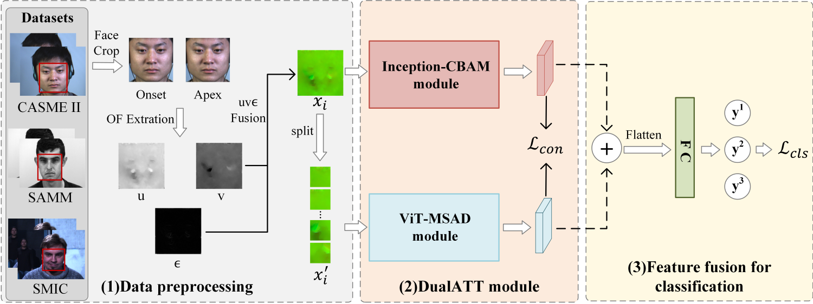
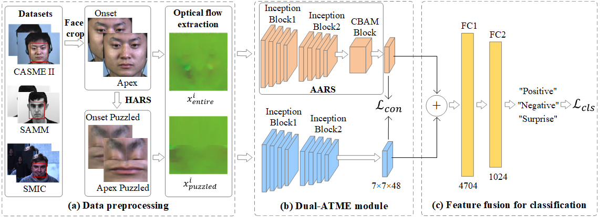
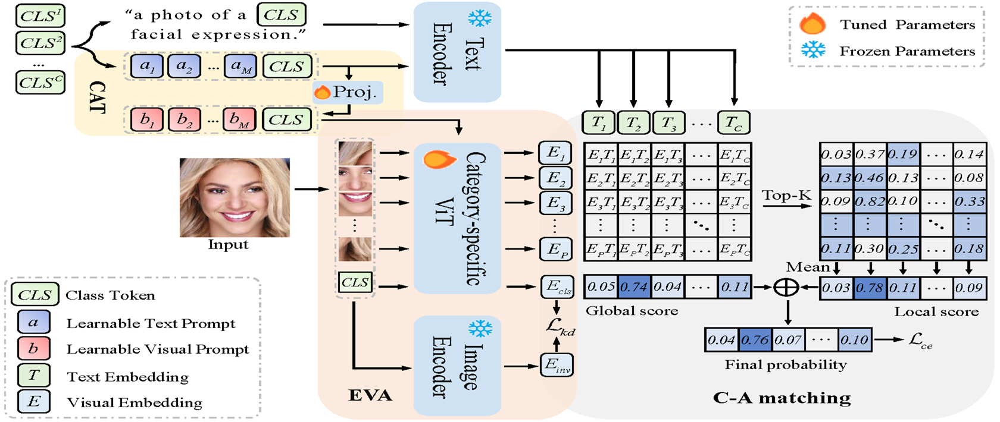
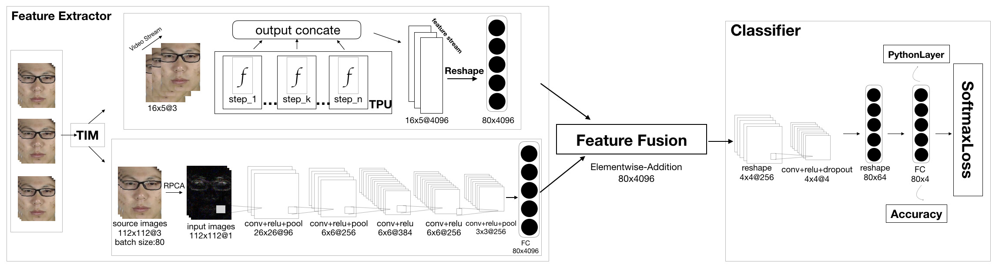
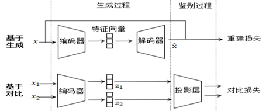

周浩樑 (Haoliang Zhou)
 |
硕士研究生, 中共党员 |
关于我
我目前在江苏科技大学计算机学院攻读硕士学位，师从黄树成教授。目前正参与导师与中国科学院自动化研究所和心理研究所的合作项目。在此之前，我于2021年6月在江苏科技大学经济管理学院信息管理与信息系统专业获得了学士学位。
我的研究兴趣主要包括: 计算机视觉, 表情识别, 视觉语言模型等。
教育经历
硕士 江苏科技大学 (2021.9 ~ 至今)
|
访问学生 加州州立大学圣贝纳迪诺分校 (2018.9 ~ 2019.1)
|
学士 江苏科技大学 (2017.9 ~ 2021.6)
|
学术论文





发明专利
- 基于多模态自监督对比学习的微表情识别方法及其系统国家发明专利, 公开号: CN116052244A
- 一种基于Inception-CBAM+的微表情识别方法及其系统国家发明专利, 公开号: CN116052245A
项目经历
2023.03-至今, 中国科学院自动化研究所多模态人工智能系统全国重点实验室多媒体计算组, 客座学生（实习）
项目名称: 基于多模态知识迁移的表情识别方法研究
项目简介: 结合多模态知识迁移方法，将情感状态融入文本描述中，以图文匹配的方式引导模型准确地捕捉情感表达在视觉和语义层面上的微妙细节，增强表情识别算法的性能。
合作导师: 徐常胜研究员, 张飞飞教授
2021.07-2023.03, 中国科学院心理研究所微表情应用研究中心, 客座学生（实习）
项目名称: 基于多模态自监督对比学习的微表情识别方法研究
项目简介: 结合自监督对比学习方法，挖掘彩图、深度流和光流等多模态信息之间的一致性联系，提升自监督学习提取信息的能力，增强微表情识别算法的性能。
合作导师: 王甦菁副研究员, 李婧婷副研究员
2023.01-2026.12, 国家自然科学基金面上项目, 参与
项目名称: 基于鲁棒表观建模的行人检测方法研究（在研）
项目简介: 主要研究复杂场景下的行人检测算法，例如: 单域中遮挡严重导致大量误检和漏检问题；跨域检测中存在模型泛化性能差的问题；增量检测中存在灾难性遗忘的问题。
2022.03-2023.03, 江苏省研究生科研创新计划项目, 负责人
项目名称: 基于Transformer与跨模态特征融合的微表情识别（No. KYCX22_3853, 已结项）
项目简介: 以跨种族、跨数据库的多场景微表情视频帧为研究对象，研究自注意力机制和深度信息对提高微表情识别的显著性，改进视觉Transformer模型，设计出适用于多种微表情数据库的微表情识别通用模型。
2018.01-2021.12, 国家自然科学基金面上项目, 参与
项目名称: 基于鲁棒表观建模的目标跟踪方法研究（已结项）
项目简介: 主要研究复杂场景下的目标跟踪算法，提出了一种基于条件随机场的鲁棒性深度相关滤波目标跟踪算法；此外还对视频中的关键部分(精彩片段)和视频时序定位等问题进行相关研究。
学术任职
期刊审稿人: IEEE TCSVT, IEEE TMM, Multimedia Systems, AJSE, SIVP
会议审稿人: IEEE ICME, ChinaMM
学生工作
班级班长（2021-2024）
研究生会组织部部长（2021-2022）
学生会科技部部长（2018-2019）
班级团支书（2017-2021）
专业能力
编程语言：Python, Pytorch
专业工具：Latex, Matlab, Linux